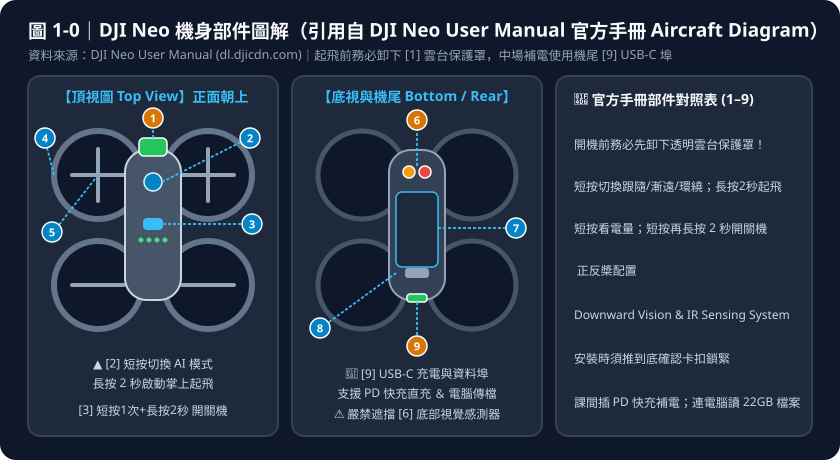
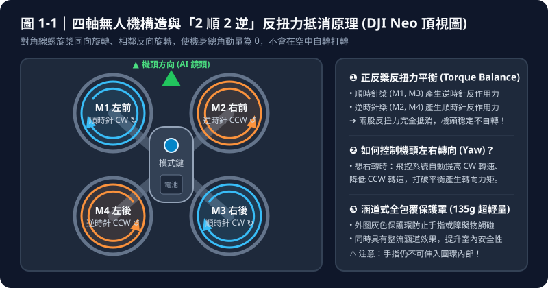
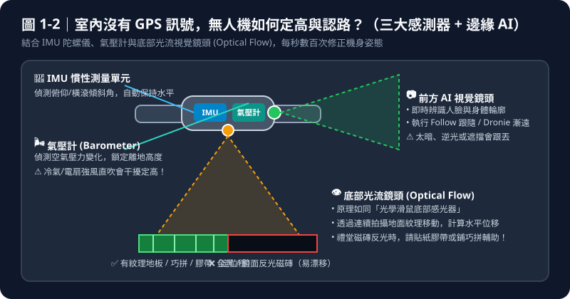

🛠️ 學生動手實作演練：DJI Neo 安全點檢 ＆ 掌上起降 SOP 動畫闖關
實飛真機前，請依序點擊下方 4 個實作步驟按鈕，觀察右側無人機的動態變化並完成安全認證：
DJI Neo / Neo 2｜高中 4 週連排教案・多語共學版（台／越／印／緬）
專為 20–32 人高中班級設計，整合 7 架學生機與 1 架教師機、克服單顆電池續航限制的 100 分鐘雙波段快充節奏，並內建越南語、印尼語、緬甸語安全指令圖卡與互動模擬工具。
起飛前請對照下方 DJI Neo 官方手冊部件編號 (1–9) 進行安全檢查：務必先卸下 [1] 雲台保護罩，確認 [6] 底部視覺與紅外線感測器 乾淨無遮擋；中場休息補電時，請將充電線插入機尾 [9] USB-C 埠。

螺旋槳旋轉產生向上的升力時，同時會產生一股反向的「反扭力」（就像站在滑板上用力往右甩手，身體會往左轉）。如果 4 顆馬達都往同一個方向轉，無人機就會在空中瘋狂打轉！因此對角線兩兩相同、相鄰相反（2 順時針 CW + 2 逆時針 CCW），才能互相抵消旋轉力矩。

四軸無人機沒有方向盤或尾翼，全靠改變 4 顆馬達的相對轉速（RPM）來升降、轉向與平移：
🟢 穩定懸停：4 顆馬達均維持 60% 轉速，總升力等於機身重量（135g），且 M1+M3 順時針反扭力與 M2+M4 逆時針反扭力完全抵消。
像人類的「內耳平衡覺」，內含陀螺儀與加速度計，每秒偵測數百次機身傾斜角度並自動修正。
像「搭電梯耳朵會感覺壓力變化」，透過測量空氣壓力微幅變化，讓無人機穩定維持固定高度。
像「光學滑鼠底部」，不斷拍攝地面紋理的移動方向來鎖定水平位置。注意：遇到全黑或鏡面反光地板會失效漂移！

DJI Neo 不需要連網到雲端，機身內的 AI 晶片就能即時辨識人像與身體輪廓（Follow / Dronie）。但當光線太暗、移動速度過快、或被柱子遮擋時，AI 演算法會遺失特徵點（Features），導致跟丟目標。
⬆️⬇️ 上下推：油門 Throttle（上升 / 下降）
⬅️➡️ 左右推：偏航 Yaw（機頭左轉 / 右轉）
⬆️⬇️ 上下推：俯仰 Pitch（前進 / 後退）
⬅️➡️ 左右推：橫滾 Roll（向左平移 / 向右平移）


寫程式控制無人機飛正方形，需結合序列（Sequence）與迴圈（Loop: 重複 4 次前進+右轉）。但真實世界有氣流與電量下降，因此需要加入條件判斷（IF 偏離 THEN 微調）並反覆測試參數，這就是工程上的 Debug（除錯）。
手機玻璃螢幕是平的，沒有彈簧回正力量，飛手眼睛很容易在「看飛機」與「低頭找螢幕搖桿位置」之間分心；而實體遙控手柄（Controller）具備物理彈簧自動置中，只要手指放開就能瞬間煞車懸停，讓飛手能專注盯緊無人機。
手機純靠一般 Wi-Fi 與飛機連線，容易受現場其他手機熱點干擾；實體遙控手柄則使用專用高抗干擾射頻協定與高增益天線，因此操作指令的「延遲（Latency）」更低、反應更即時。

實飛真機前，請依序點擊下方 4 個實作步驟按鈕，觀察右側無人機的動態變化並完成安全認證：
資訊核心：IMU、氣壓計、底部光流定位 (Optical Flow)、邊緣 AI 辨識極限
🛠️ 當堂實作：(1) 卸下 [1] 雲台罩 與全員掌上起降 1 次；(2) 測試 3 項 AI 追蹤極限變因；(3) [9] USB-C 中場補電。
📝 課後作業：找出校園中 1 個「適合光流定位」與 1 個「會導致光流漂移」的地面材質並說明原因；手機安裝 DJI Fly App。
資訊核心：2.4GHz vs 5.8GHz Wi-Fi 干擾、空間四軸變數、虛擬碼與 Debug
REPEAT 4 與 IF 修正）🛠️ 當堂實作：(1) 正確配對專屬編號 Wi-Fi；(2) 依正方形虛擬碼實飛 2 次並 Debug 秒數；(3) 低空穿越 80cm 門框。
📝 課後作業：使用網站「演算法模擬器」記錄 15° 偏航修正前後誤差；推論電池 100% 與 25% 對相同秒數飛行距離的影響。
資訊核心：觸控虛擬搖桿 vs 實體遙控手柄延遲比較、系統整合測試
#01/#02 人換機不換）🛠️ 當堂實作：(1) 完成手機 vs. 實體手柄 S 型繞標計時與落點誤差測量；(2) 繪製草圖並搭建安全障礙賽道試飛。
📝 課後作業：用網站「HCI 計算機」算出手柄效率提升百分比；提交第 4 週決賽三階段飛手與多語觀察員分工策略單。
資訊核心：多階段任務整合、數位影像偵察、AI 與農業/防災產業連結
🛠️ 當堂實作：(1) 完成雙軌 PK 三階段接力賽；(2) 匯出清晰多語密碼牌偵察照；(3) 完成 2 分鐘團隊 Debug 成果發表。
📝 課後作業：撰寫 100 字「台灣／越南／印尼／緬甸無人機 × AI 解決家鄉問題」微型提案（含使用感測器與解決痛點）。
| 情境 | 繁體中文 | English | 越南語 Tiếng Việt | 印尼語 Indonesia | 緬甸語 မြန်မာ |
|---|---|---|---|---|---|
| 🛑 緊急停止 | 停！全部退後！ | STOP! Step back! | Dừng lại! Lùi ra! | Berhenti! Mundur! | ရပ်ပါ! နောက်ဆုတ်! |
| 🟢 確認淨空 | 周圍淨空！ | Area clear! | Khu vực an toàn! | Area aman! | နေရာရှင်းပြီ! |
| 🛫 準備起飛 | 我要起飛了！ | Taking off! | Chuẩn bị cất cánh! | Siap lepas landas! | ပျံတက်မယ်! |
| 🛬 準備降落 | 我要降落了！ | Landing! | Chuẩn bị hạ cánh! | Siap mendarat! | ဆင်းသက်မယ်! |
| 🔋 電量過低 | 電量不足，快降落！ | Low battery, land now! | Pin yếu, hạ cánh ngay! | Baterai lemah, mendarat! | ဘက်ထရီနည်းပြီ ဆင်းပါ! |
| 🔌 中場補電 | 關機去充電！ | Power off & charge! | Tắt máy và sạc pin! | Matikan dan isi daya! | စက်ပိတ်ပြီး အားသွင်းပါ! |
立刻降落 / 停止操作
最高等級緊急停止手勢
準備起飛
確認組員都點頭後再起飛
降低高度
提醒飛手超過 1.5m 限制
退後保持 1.5m
請圍觀人員退至安全線外
場地淨空 / 成功
任務確認與正向回饋
Passcode: IT-TW01
Passcode: IT-VN02
Passcode: IT-ID03
Passcode: IT-MM04
調整虛擬碼中的前進秒數、轉向與側風誤差，觀察「未修正」與「加入 IF-ELSE 修正」的軌跡差異。
REPEAT 4 TIMES (迴圈執行第 1 / 4 邊): 1. Pitch_Forward(t = 2.0s) // 直線推進 2. Yaw_Right(90° + 氣流誤差 12°) 3. IF (IMU_偏航 > 5°) THEN 逆向微調補償()課堂投影專用！輸入各組實驗秒數（逗號分隔），即時計算「手機觸控」與「實體遙控手柄」的平均耗時差異。
實體遙控手柄平均快了 39.2%，顯示實體觸覺回饋與低延遲協定對精準操控有顯著幫助。
請自己組合飛行指令積木，引導無人機從 🛫 起點 (0,3) 避開 ⛔ 冷氣出風口與細繩障礙，飛抵 🇲🇲 密碼牌 (2,0) 執行拍照，最後停在 🎯 終點 (3,0)！
親手操作左搖桿（升降／轉向）與右搖桿（前後／左右平移），體驗「📱 手機無回中漂移」與「🎮 實體手柄自動置中煞車」的操控差異，完成穿門與降落挑戰！
| 評量向度 | 優良 (3 分) | 良好 (2 分) | 待加強 (1 分) |
|---|---|---|---|
| 資訊原理與數據 (35%) | 能準確解釋光流定位、通訊干擾與 HCI 延遲差異；虛擬碼具備迴圈與 Debug 紀錄。 | 大致能說出感測與操控差異；學習單有完成基本數據紀錄。 | 僅停留於試飛娛樂，無法解釋誤差原因。 |
| 安全與跨文化協作 (25%) | 嚴格遵守 1.5m 淨空與快充紀律；四角色確實輪替，主動以圖卡或手勢協助隊友。 | 大部分時間遵守安全規範與輪替，能配合團隊指示。 | 曾未確認淨空即起飛，或未落實換手。 |
| 操控與任務達成 (25%) | 穩定控制懸停、穿框與降落；順利完成第 4 週三階段挑戰並清晰拍下密碼牌。 | 能完成基本起降與部分障礙穿越，偶有偏航但能修正。 | 無法穩定控制高度或方向，多次碰撞中斷。 |
| 賽道與成果發表 (15%) | 賽道安全具創意；發表能清楚呈現影像並用數據說明 Debug 歷程。 | 賽道符合安全規範；能簡要說明團隊成果。 | 賽道忽略安全間距；發表過於簡略。 |